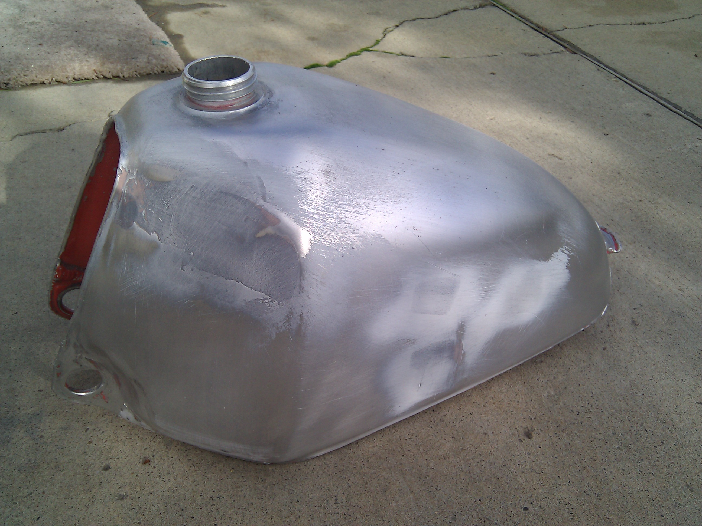

Sold
1979 CR250R Aluminum Gas Tank (Modified for C&J XR500)
$400 (SOLD)
1979 CR250R aluminum gas tank, professionally modified for a C&J XR500 frame. Ready for paint, with period-correct color paint included.
▶ Watch Video